La
vue
|
On pense en général à l'oeil comme appareil perceptif et nous aborderons
largement le sujet sous cet angle dans ce texte. Cependant dans ce préambule et un peu au-delà,
il semble naturel de rendre justice à cet organe précieux en évoquant aussi son rôle
dans le domaine de l'expression.
L'oeil humain est visible et même voyant. Regardons-le dans un miroir, que
voyons-nous ? Du noir, une couleur, celle de l'iris, mais aussi beaucoup de
blanc, un blanc lumineux, brillant. Ce blanc, absent du reste visible du corps à
l'exception toute relative des dents, se voit d'assez loin. Au point, parfois,
de dessiner la limite du danger d'être vu (souvenons-nous de l'injonction
militaire « ne tirez que quand vous verrez le blanc de leurs yeux »). Notre
espèce en particulier est peu discrète sous ce rapport. Les chats, les chiens,
les vaches ou les chevaux et même nos cousins chimpanzés ou orangs-outans,
pourtant assez proches de nous par les expressions de leur regard, ne laissent qu'à peine entrevoir le
versant clair du globe. Seuls quelques oiseaux (chercher certaines variétés
rares de perroquets) semblent faire exception.
"La fonction fait l'organe",
disait Claude Bernard. Est-ce la fonction expressive qui nous a "fait",
"façonné" cet oeil ? Nous y reviendrons.
Que voyons-nous encore de l'oeil ? Que l'on y lit très bien : à grand
renfort de muscles, de vaisseaux, de cils et de sourcils, de peau et de
paupières, de rides, de pattes d'oie, de valises, de larmes, de clins et bien
sûr de maquillages, c'est décidément l'un des principaux agents d'expression. Plus encore,
regarder est un acte (comme parler) et chez les animaux, c'est un code, dont
nous avons partiellement hérité d'ailleurs.
Mais venons-en à l'oeil comme organe de perception puisque c'est sous cet angle
que nous en parlerons essentiellement ici (sans rompre le lien toutefois).
Faisons une comparaison sans valeur scientifique, juste dans le but de prendre
un recul nécessaire pour tenter d'apprécier l'importance des deux fonctions,
expression et perception :
Un autre de nos sens, l'ouïe, a quelque chose en commun avec la vision : il
s'agit dans les deux cas de capter et d'interpréter un phénomène extérieur de
nature ondulatoire. L'audition bat la vue à plates coutures dans le domaine de
l'étendue des fréquences perçues. Si nos oreilles percevaient une aussi courte
étendue de sons, nous n'entendrions qu'une seule gamme de notes
[1].
En échange si l'on peut dire, nos si fines oreilles ne semblent pour le moins
pas aussi expressives que nos yeux. Elles sont inertes (en général). Ce rôle ne leur
appartient plus, cette fonction a abandonné cet organe. Nous aurions beaucoup à
réapprendre des chats.
|
- Introduction ci-contre
- Avant d'aller plus loin : les couleurs qui
n'existent pas
Premier
panorama
- Le centre de l'oeil
- Le blanc de l'oeil
-
La prunelle
- La pupille
- La cornée, le cristallin et
le muscle ciliaire
- L'iris
- La
fovéa
- Le disque
optique, le point aveugle et le nerf
optique
- Le chiasma optique
- La suite du chemin
- Au-delà
Mises en perspective
- Avertissement
- Les visions animales
- Histoire d'oeil
-
Les anomalies de la vision
humaine
a. Les daltonismes, des exemples-types.
b. la tétrachromatie
- Mécanismes artificiels
- Connaissance de l'oeil
Focus sur les récepteurs rétiniens
-
Les bâtonnets
- Les
cônes
- Au
coeur du sujet : rétinal et opsine
- Longueurs d'ondes
- Les catégories de cônes
-
Des serrures
-
Des groupes
- Un véritable fatras biologique
très bien
organisé : la rétine, mangrove de l'oeil
Conclusion
_____ |
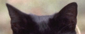
Avant d'aller plus loin : les couleurs qui
n'existent pas
Le lecteur pourrait être surpris du
fait que l'on n'évoque ci-dessous le spectre visible que du bleu au rouge, en
oubliant les violets, les mauves et les pourpres. La raison en est que comme le
blanc, ces couleurs n'existent pas physiquement. Elles sont des abstractions,
des synthèses absolument "artificielles" produites "naturellement" par notre appareil
visuel qui fonctionne par groupements. La couleur pourpre nous apparaît lorsque du bleu est présent et du rouge
aussi de manière très resserrée dans l'espace ou dans le temps, mais il n'existe
pas de spectre pourpre.
Le blanc, lui, est l'addition de plusieurs spectres. Pas
de spectre blanc.
Pas de spectre noir non plus (absence
de couleur), ni de spectre gris car celui-ci nous ramène au cas du blanc, en
moins lumineux.
Premier
panorama
Le centre de l'oeil
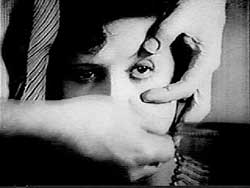Pourquoi pas commencer par là.
C'est un milieu suffisamment pur pour que la
lumière puisse y transiter sans encombre. Il n'est absolument pas blanc, même partiellement, comme pourrait le
suggérer l'effrayant trucage du Chien andalou de Luis Buñuel (on a choisi ici une
autre image pour ne pas choquer inutilement) : il est intégralement transparent. C'est
ce que l'on appelle le corps vitré, une gelée limpide.
Entre la membrane blanche externe et ce centre se situent d'autres membranes :
* vers l'extérieur, la
choroïde, sorte de
« couche de service » irrigant et nourrissant les autres
composants de l'oeil,
* la toute précieuse rétine, vers l'intérieur.
Le blanc de l'oeil
Cette sclérotique ou sclère (du grec sklêros, dur) - est une membrane opaque
effectivement dure, un tendon qui maintient très fermement sous pression
l'ensemble de cet organe.
La prunelle
C'est un terme que l'on évitera ici malgré la beauté de son
évocation fruitière car vérification faite, son sens réfère tantôt à la pupille,
tantôt à l'ensemble pupille et iris, voire par métonymie à l'oeil entier. Trop
imprécis pour cet exposé, malheureusement.
La pupille
Il faut bien sûr un trou pour que la lumière entre dans la chambre obscure et
atteigne la rétine. Notons au passage que l'image qu'elle y forme est à
l'envers, comme sur la pellicule d'un appareil photo argentique. La remise à
l'endroit se fait sans lentille ni miroir mais elle est bien réelle et tellement
parfaite que nous n'en avons pas la moindre conscience. On peut dire que nous voyons le monde à l'envers sans le savoir.
Le croisement des nerfs qui a lieu
dans le chiasma optique (nous reviendrons sur ce terme, lien), n'est lui-même pas
assimilable semble-t-il à un retournement de l'image mais plutôt à quelque chose
de beaucoup plus compliqué : un traitement sélectif côté droit/côté gauche de
l'ensemble de la vision. Voilà de quoi se faire une idée de la complexité du
traitement naturel de l'image.
La cornée, le cristallin et
le muscle ciliaire
La sclère délimite l'iris devant lequel elle devient cornée. Celle-ci,
tunica
cornea, de tunique et corne - on parle de « tunique de l'oeil » - a la
particularité d'être transparente et déformable. C'est une membrane externe
perpétuellement humide sans équivalent dans le corps. Nous n'avons aucune
information sur l'association avec la corne, très ancienne semble-t-il.
N'hésitez pas à nous écrire si vous disposez d'informations à ce sujet.
La cornée est séparée du cristallin (la lentille de l'oeil,
enfermée dans un « sac cristallinien ») par une sorte de
petite poche d'eau, l'humeur aqueuse (ou chambre
aqueuse, ou antichambre de l'oeil, observable sous certains angles comme un très
léger renflement). Le cristallin est « coincé » entre cette
poche et un ligament suspenseur (le zonule) le
maintenant à l'avant du corps vitré. Latéralement, un tout petit muscle peut
modifier rien moins que la forme de la lentille elle-même. C'est le
muscle
ciliaire (ou corps ciliaire, sans rapports avec les cils).
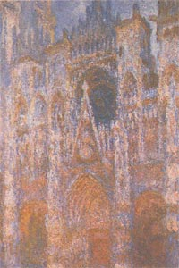
Cette déformation du cristallin est ce que l'on appelle
l'accommodation. C'est ce qui nous permet de faire le point sur le proche
ou le lointain. Avec un objectif photographique nous obtenons un résultat similaire d'une
façon qui peut sembler particulièrement primaire en comparaison, en déplaçant
une solide lentille de verre en avant ou en arrière. Si nous savons produire et implanter un
cristallin artificiel lorsque le cristallin naturel durcit ou s'opacifie,
l'ensemble du dispositif naturel est encore au-delà de ce que nous savons
reproduire techniquement de manière satisfaisante.
Notons au passage que
certaines sources - pas des moins connues - décrivent l'opération de la
cataracte comme une ablation du cristallin en
oubliant qu'il s'agit aujourd'hui de lui substituer une prothèse. Dans le passé cependant,
l'opération était réalisée sans substitution. L'oeil opéré ainsi est dit « aphake »
alors qu'un implant donne un oeil « pseudophake ».
On opérait déjà de la cataracte pendant l'Antiquité (lien
externe). Sans prothèse, l'opéré devenait bien sûr incapable de faire le
point mais au moins, il voyait.
Évoquer ce point sur Dotapea n'est pas superflu : Monet lui-même aurait modifié
sa palette après une telle opération. Avant de parler de couleurs, interrogeons
nos yeux.
L'iris
Il joue le rôle de diaphragme mais peut-être a-t-il aussi d'autres fonctions,
notamment celle de nous intriguer. Les Berbères ont souvent les yeux très
clairs, les Scandinaves et beaucoup de Slaves et de Centre-Asiatiques aussi. On
pense a priori que la luminosité de la neige ou du désert y sont pour quelque
chose en termes d'adaptation au milieu. Cela pourrait être une fausse piste :
les Peuples du Nord (Inuits, Sibériens, Saamis) n'ont pas l'iris
particulièrement clair de même que les San (Bushmen) du Kalahari ou les Égyptiens. La
nature expérimente sans arrêt ses propres mutations, les déplacements humains
brouillent les cartes à toute vitesse à l'échelle de l'évolution, sans parler
des changements climatiques, très significatifs eux aussi à l'échelle de
l'histoire de notre espèce.
Ces sujets ont fait l'objet de débats et de polémiques.
Sans entrer dans le détail on en dira quelques mots. Que la fonction modèle
l'organe est une chose mais que l'absence de fonction implique la disparition ou
la transformation d'un caractère en est une toute autre. On suivra ici la
« théorie neutre » de
Motoo
Kimura (médaille
Darwin 1992) : les mutations ne s'opposent pas nécessairement à l'adaptation
au sens où l'entendait Darwin ni à la fonction, chère à Claude Bernard. Il existe
des Africains aux yeux verts, ils ne s'en portent pas plus mal même si l'utilité
sur les plans fonctionnel et adaptatif de cette couleur est inconnue - pour
autant qu'elle existe, ce qu'il est pertinent de mettre en doute.
La taille de l'iris humain semble poser davantage question. Nous avons évoqué au
début de ce texte le blanc de l'oeil, assez vaste chez l'humain. Pourquoi cet
iris mince et ce blanc voyant, voilà une question à laquelle il est difficile de
répondre, et pourtant le fait est suffisamment notable et constant pour que l'on puisse
supposer une ou plusieurs fonctions correspondant à cette particularité.
Notamment, nous distinguons assez bien, par rapport à d'autres espèces, où
regarde autrui (comme parfait contre-exemple, on évoquera un peu plus loin les
insectes qui n'ont pas cette capacité). Cela participe-t-il à la
fonction de communication sur laquelle nous avons insisté en préambule ? Sujet
vaste et semé d'écueils. Toute information précise est bienvenue.
Ajoutons quelques informations concernant cette splendeur de délicatesse florale
qu'est l'iris :
* bien que l'on distingue usuellement trois
ou quatre dominantes (brun, bleu, vert, gris et glauques), ses
couleurs s'avèrent incroyablement variées et bien perceptibles même à l'oeil nu
dès lors que nous nous approchons vraiment.
L'iris de nombreux animaux peut être
entièrement jaune mais le nôtre, s'il ne le peux pas (semble-t-il), porte très
couramment une multitude de taches jaunes et d'autres couleurs, comme certaines
variétés de la fleur du même nom.
Crédit photo
Jean Mascolo
En réalité l'iris est un chaos de reliefs et de couleurs traversé de sillons,
d'anneaux, de cryptes. un véritable univers.
* la coloration foncée d'un iris correspondrait à une présence soutenue de
mélanine.
* nous manquons d'informations sur les molécules impliquées dans ces
colorations. N'hésitez pas à nous écrire si vous disposez d'informations.
* l'iris peut se dilater ou se contracter autour de la pupille dans des
proportions très importantes sous l'effet de deux minuscules muscles,
le sphincter circulaire pupillo-constricteur situé en bordure de la pupille et un
dilatateur qui s'étend sous toute la surface de l'iris. L'action de l'un
inhiberait celle de l'autre sous l'effet d'impulsions dirigées par les systèmes
sympathique et parasympathique.
Quel que soit le diamètre de notre pupille, nous ne voyons jamais
la couleur de notre iris par transparence. Il semble donc extraordinairement
opaque. On évoque pourtant seulement deux couches de cellules pigmentées (information non
confirmée), plus le muscle dilatateur, pas très épais. Au sujet de ce mystère
(qui réside peut-être dans la manière dont la rétine tapisse l'oeil),
toute contribution est bienvenue.
* le tissu pigmenté est fibreux, irrigué et innervé (à ce titre une pure
merveille). Il est entouré d'un « stroma irien », un tissu conjonctif (on peut
traduire grossièrement stroma par tapis) dans lequel se situerait la mélanine
lorsqu'elle est présente - information non confirmée. Elle l'est en principe
beaucoup moins pour les yeux bleus, elle est absente chez les albinos dont l'iris est si
intégralement transparent que le superbe rouge de leurs yeux n'est autre que
celui des délicats muscles situés à l'arrière, autour du cristallin.
La rétine
Comme la sclère ou la choroïde, c'est une quasi sphère de quatre centimètres de diamètre. Dans
son épaisseur (un quart de millimètre), la lumière se transforme en information
neurobiologique.
Elle est composée de trois couches :
* les photorécepteurs (bâtonnets et cônes),
* une couche intermédiaire qui va affiner les informations des photorécepteurs,
* des cellules ganglionnaires
(il s'agit de neurones) liées au cortex visuel par le nerf optique.
Nous y reviendrons longuement
ci-dessous.
La fovéa
La fovéa est le centre de la rétine,
dit-on. Elle ne doit en fait ce titre un peu bancal qu'à sa position
face à la rétine, sur le fond de l'oeil. Son diamètre théorique est
très petit, de moins d'un millimètre et demi chez l'humain. C'est une zone très
riche en cônes, donc particulièrement adaptée à la vision
de la couleur. Notre acuité visuelle diurne y est maximale. Si maximale que
dépassant de loin celle des autres espèces, elle est
caractéristique de l'humanité.
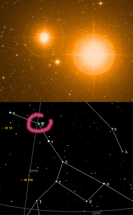
La fovéa et la zone qui l'entoure (la
macula) sont peu chargées de vaisseaux sanguins. Il
s'agit d'une région particulièrement privilégiée en termes de capacité
perceptive...
... de capacité perceptive diurne,
car dans la nuit, c'est tout le contraire. Pour repérer une étoile peu lumineuse
ou proche d'une autre qui l'est trop, il vaut mieux utiliser (pointer, viser) un champ visuel
éloigné de la fovéa. Sur l'image ci-contre, l'étoile Alcor (à gauche, magnitude
4) apparaît malgré la brillance de Mizar (magnitude 2,27). Nul besoin de télescope, on peut voir
Alcor à l'oeil nu. Il suffit de viser un point imaginaire un peu
à côté de l'ensemble.
Ce couple est situé dans la Grande
Ourse (cercle rose dans la carte en bas) et peut être vu toute l'année dans
l'hémisphère Nord.
Ce test visuel est assez connu mais
on peut le reproduire sur beaucoup d'autres objets, en couples ou isolés comme
par exemple la nébuleuse d'Orion, pas toujours très perceptible surtout en
ville.
Crédit photo
ESO
Le disque
optique, le point aveugle et le nerf
optique
Le disque
optique, appelé à tort ou à raison "tête du nerf optique", est
l'inévitable "couture" par laquelle les millions d'axones en provenance des
cellules ganglionnaires se rassemblent
pour passer derrière le fond de l'oeil. Certains n'hésitent pas à utiliser des
formulations assez impressionnantes que l'on peut reprendre ainsi : le cerveau
s'étend jusqu'à la rétine. Distinguer un nerf optique
parce que l'on est en présence d'un rassemblement d'axones est en effet
davantage une facilité conceptuelle qu'une réalité. Il y a bien sûr continuité
intégrale de la communication neurale de l'oeil au cortex visuel, en passant par des
corps intermédiaires.
Le disque optique est une zone
aveugle - dite « le point aveugle » - non seulement
à cause de cette convergence d'axones, mais aussi parce que d'assez gros
vaisseaux sanguins suivent cette convergence. Pour révéler cette zone il suffit
de trouver un point de repère pas trop large, une tache, un détail, de fermer un
oeil, de placer deux doigts, bras à peu près tendu, juste à gauche de ce repère
et de viser juste à gauche de vos doigts. Le point de repère disparaît.
Le chiasma optique
Située presque juste derrière les yeux, cette sorte
de X nerveux (du grec khiasma, croisement) n'est pas un croisement
symétrique du nerf optique. Fait de plusieurs "circuits" qui ne suivent pas la
même trajectoire, le chiasma grouperait les visions latérales (non-croisées)
d'une part et les visions
centrales (croisées) d'autre part.
De telles interversions nerveuses
droite/gauche ne sont pas rare dans le corps humain et sont connus depuis
Hippocrate. A la charnière entre le IVème et le IIIème
siècles BC, cet admirable observateur scientifique avant la lettre (ami de
Démocrite) avait déjà identifié le rôle des nerfs et placé le siège de la pensée
dans le cerveau, avant qu'Aristote l'en détrône durablement, lui préférant le
coeur.
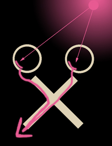
On ne connaît toujours pas avec une
totale exactitude l'utilité de ces croisements nerveux. Quoi qu'il en soit, dans
le cas du chiasma optique, on constate, comme sur le schéma ci-contre, que grâce
à ce « demi-croisement », une lumière située à main droite est « répercutée »
via le nerf optique en direction du cortex visuel gauche. L'inverse est
également valable. Il s'agit donc bien de grouper les informations « bâbord » et
« tribord ».
La suite du
chemin
Au-delà du chiasma, n'allons pas
croire qu'il y a fusion de chaque côté et que tout parvient au cerveau tel quel.
Notons d'ailleurs au passage qu'à ce niveau, ce que l'on nomme « nerfs » est
toujours constitué des axones des cellules ganglionnaires
de la rétine. Cela se nomme « tractus
optique » et non plus « nerf optique » mais c'est exactement la même chose,
juste un peu plus loin.
Les informations arrivent donc encore
relativement brutes à des entités intermédiaires tout en continuant semble-t-il à suivre des
trajectoires différentes selon qu'elles proviennent de la partie « extérieure »
des rétines, non croisées dans le chiasma, ou selon qu'elles sont d'origine
« centrale » (on dit souvent « nasale »), croisées.
Les
informations croisées suivraient un parcours
relativement simple. Elles parviendraient aux deux
pulvinars, puis directement au cortex visuel, vers l'aire V5 dont il est
question dans la note 2 (lien). Un pulvinar (oreiller en
latin) est semble-t-il assez réactif au changement de taille des objets vus,
soit pour ainsi dire au mouvement indépendamment du relief. Cela semble
impliquer qu'à ce niveau il est déjà question d'analyse de la forme, de la
luminosité, de la couleur et de la brillance (travaux de Benevento notamment,
1981, 1995 etc.), et de ce que l'on appelle l'attention :
détection, recherche, sélection, un ensemble de phénomènes en partie de l'ordre
de l'action - Petersen 1985. Le pulvinar rêve fort et crève l'oreiller : avant
même d'arriver au cerveau on n'en serait déjà plus à la passivité.
Quant à
l'aire V5, l'interprétation du mouvement est dirait-on sa spécialité.
Les
informations non-croisées dans le
chiasma, elles, parviendraient au corps genouillé
(en fait, selon d'autres sources, les informations croisées dans le chiasma y
parviendraient aussi mais il y a peut-être là une confusion due au fait que les
deux pulvinars et les deux corps genouillés sont collés et forment deux paires -
on laissera ce sujet en forme de point d'interrogation). Corps genouillé : un nom dû à une
configuration formelle. Il s'agit en effet de sortes de couches superposées plus ou moins
repliées. On évoque non seulement une organisation
stratifiée mais aussi un traitement en « colonnes » et une influence corticale
à contre-courant. Il est difficile d'attribuer à ce corps un rôle précis de manière
affirmative car il existe à ce jour plusieurs interprétations.
Au-delà
Au-delà, on entre dans un domaine
réellement théorique, pleinement dans le champ de la recherche neuroscientifique
contemporaine.
On peut juste préciser que des zones
ont été identifiées et localisées dans le cortex visuel, cette partie du cerveau qui
reçoit des informations en provenance des corps intermédiaires que nous venons
d'évoquer.
La zone dite "V1" serait responsable
de la persistance des couleurs, des ombres colorées et de notre capacité à
concevoir un objet indépendamment de l'éclairage (renforcement des contrastes
chromatiques - ce qui réfère à la découverte des « îlots chromatiques » et des
« cellules à double opposition », par David Hubel et Margaret Livingstone,
1979). La zone V3 analyserait l'orientation, la zone V5, le mouvement. Les
autres zones ont sans doute un rôle plus compliqué et sont moins documentées. La zone
V4 aurait tendance à impliquer de larges régions du cerveau sur
un mode associatif ce qui fait dire à certains qu'elle correspondrait à
l'arrivée de la vue à la conscience.
Mentionnons aussi l'existence d'une théorie de « la voie du quoi » et de « la voie du où »
qui ne peut être expliquée en détail ici.
En réalité nous avons déjà pénétré depuis un moment dans ce texte dans un
domaine où la recherche n'a pas apporté de véritables certitudes.
Le vénérable
Hippocrate ne se sentirait probablement pas dépaysé par nos connaissances et
surtout nos conclusions actuelles par
rapport à ce qu'il savait déjà, mais il s'agit peut-être d'apparences. Le
travail effectué ces derniers siècles et surtout ces dernières décennies, aussi imparfait qu'il semble, est considérable.
La route n'en paraît pas moins fort longue.
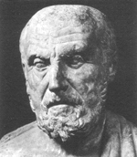
Mises en perspective
Avertissement
Ce passage est conjugué au conditionnel car de nombreux mystères et incertitudes
demeurent dans un exercice qui ne consiste en rien d'autre que reconstituer ou
décrire objectivement ce que l'on peut nommer par excellence la vision
subjective. Lançons ceci comme une demi-boutade : ce n'est pas en observant un
oeil, un nerf optique ou un cerveau, même avec des instruments performants, que
l'on peut décrire l'image qui apparaît dans la pensée, ce qui fait d'ailleurs
tout l'aspect passionnant de la recherche dans ce domaine.
Peut-être certains poètes parviennent-ils cependant à percer
les mystères de la vision, tel Baudelaire qui savait lire l'heure dans les yeux
des chats.
Les visions animales
La plupart des animaux voient moins de couleurs que nous et même aucune dans de
nombreux cas. Les singes et quelques cas exceptionnels (on mentionne
les écureuils, information non confirmée) semblent jouir d'une perception
chromatique proche de la nôtre. Elle serait même meilleure en ce qui concerne
différents oiseaux et autres espèces (voir
tétrachromatie). Pour la majorité, les différences par rapport à la
vision humaine sont réellement notables. Le chat par
exemple serait « dichromate protanope » : il percevrait deux couleurs, le bleu
et le vert, pas le rouge (pas d'équivalent des cônes L). Le chien verrait seulement le vert.
Attention : tous ces propos - qui d'ailleurs
ne sont encore que des hypothèses à ce jour - sont réellement à nuancer tant les écarts entre
les fréquences perçues par les différentes catégories de cônes sont
dissymétriques et peu alignées sur les primaires ou même les grandes catégories
de couleurs, et tant une catégorie de cônes recouvre à elle seule une gamme de
fréquences fort large (une bonne moitié du spectre). La vision colorée n'est
absolument pas basée sur trois couleurs régulièrement réparties, nous le verrons
plus loin. Les cônes M du chien, par exemple, lui permettraient de percevoir a
minima du jaune, du vert et du bleu, pas seulement du vert.
D'autres animaux y compris mammifères ne disposent d'aucun cône S.
Cette variété dans le monde animal pourrait ne pas être
sans rapport avec des considérations de l'ordre de l'adaptation et des mutations
aléatoires.
Comment dénicher
des fruits si je n'en vois pas les couleurs. On peut inverser la proposition : une mutation
permettant à un animal de percevoir plus de couleurs le rendra capable de
cueillir des fruits. Mais il peut aussi bien préférer la viande. Sans
pour autant
négliger la beauté de nouvelles couleurs. Toute mutation, même si elle peut
paraître précieuse d'un autre point de vue, n'est pas forcément utile ou
souhaitée par un individu, un groupe, une espèce. Elle est là, et bien sûr nous
en faisons ce que nous pouvons et ce que nous voulons.
Prenons un exemple imaginaire. Si nos iris devenaient
phosphorescents, détesterions-nous cette mutation, la considèrerions-nous comme
un handicap ou bien au contraire comme une capacité de fasciner ou quelque chose
de cet ordre ?
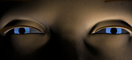
Quelle que soit leur perception chromatique,
un nombre important d'animaux traiteraient bien mieux
que nous les informations de
luminosité. Être nyctalope (voir bâtonnets
ci-dessous) n'est pas une rareté zoologique et la sensibilité au
mouvement serait souvent excellente.
Au-delà de ces tendances, il est
assez vain d'essayer de décrire un cas
général pour le règne animal. Par exemple chez différents mammifères, un
dispositif biologique bien connu tel que le tapetum lucidum, situé dans la
choroïde, occasionne un réfléchissement bien connu de la lumière (un effet de
fluorescence selon certains, information non confirmée) sur le fond de l'oeil et
semble jouer un rôle dans la pénombre. Il ne fait pas de miracles : les chats ne
voient pas dans le noir. Par contre on peut citer
la réceptivité infrarouge des yeux des moustiques qui savent très bien où piquer
sans lumière visible. Plus exotique encore, la
perception de la polarisation de la lumière par certaines araignées (lien).
Histoire d'oeil
A quoi ressemblait le
premier oeil ?
Difficile de répondre à cette question. On peut noter qu'il peut y avoir oeil sans qu'il y ait lentille
(insectes). Une « chambre » pourvue d'une ouverture ou quelque chose qui y
ressemble et un photorécepteur qui déclenche des réactions, cela pourrait
suffire pour parler d'oeil même en l'absence de neurones. Les dictionnaires ne
nous renseignent guère sur les limites lexicales en définissant l'oeil comme « organe
de la vue », la vue comme « action de voir » et voir comme « percevoir
les images des objets par le sens de la vue » ou « percevoir quelque
chose par les yeux ».
On évoque l'existence d'un gêne commun dirigeant le développement des yeux pour
tout le règne animal. Mais en deçà de l'univers des êtres organisés, certains
mentionnent l'existence d'appareils biologiques qui auraient été réactifs
directionnellement à la lumière chez des êtres monocellulaires très anciens.
L'information transmise aurait été « il y a de la lumière par là ». A peu près
l'équivalent d'une cellule photoélectrique. Ce sont des hypothèses, cependant les yeux à facettes des insectes
semblent la multiplication de ce principe. Il s'agit de milliers d'yeux sans
lentilles qui permettent à un cerveau minuscule de constituer une image dans un
champ de vision particulièrement large là où notre organisation oculaire a
tendance à limiter ce champ.
Cette limitation a des implications. Chats, chiens et singes nous ressemblent :
on peut les regarder de face, ainsi que certains oiseaux nocturnes, mais on peut
à peine regarder un cheval , un âne ou une vache dans les deux yeux simultanément, et
c'est peine perdue pour un pigeon, un poisson, etc. Le rétrécissement du champ
est une perte pour la vision mais peut-être un gain pour la communication par le
regard et par-delà pour une sensation d'affinité entre espèces, assez profonde
pour en marquer semble-t-il très durablement leur destin commun.
Le poids émotionnel d'un regard frontal n'est-t-il pas considérable ?
Les anomalies de la vision
humaine
Partant des anomalies, la science a pu progresser dans la connaissance de la
vision et de ce progrès sont nées des applications techniques majeures ainsi que
des théories artistiques. Citons un passage du site du CNEBMN (Collège National
des Enseignants de Biophysique et de Médecine Nucléaire) :
« Les dyschromatopsies [daltonismes] devrait figurer en bonne place dans les
bibliothèques de tous ceux qui s'intéressent de près ou de loin à la vision des
couleurs ou qui utilisent la couleur (étudiants en biologie, biochimie,
médecine, graphistes, plasticiens, coloristes, éclairagistes, ingénieurs
biomédicaux). Ils prendront connaissance de son contenu avec beaucoup de fruit. »
(lien
externe).
a. Les daltonismes, des exemples-types.
Mais comment effectuer des
comparaisons ? Une différence entre deux fréquences peut-elle être interprétée
dans un sens ou dans l'autre (vers le bleu ou vers le rouge) ou sont-elles
interprétées comme équivalentes ? N'hésitez pas à
nous écrire si vous disposez d'éléments de réponses.
b. la tétrachromatie
C'est une autre anomalie chez l'humain. Certains d'entre nous disposeraient d'une quatrième
catégorie de cônes, sensibles autour de l'orangé. En termes de fréquences, cela
les situerait tout près des cônes M et L déjà très abondants. Certains chiffres
annoncés ont de quoi surprendre : 50% des femmes et 10% des hommes en
possèderaient. Nous n'avons pu en obtenir ni la confirmation ni l'infirmation.
Différentes sources mentionnent aussi la présence de ces "cônes supplémentaires"
chez certains animaux, de même qu'un cinquième type.
Libero Zuppiroli précise ainsi que
« Beaucoup de vertébrés, comme les oiseaux, les tortues ont des rétines avec
quatre voire cinq sortes de pigments. Sans doute illustrent-ils ce qu'auraient
pu être les autres évolutions possibles, si les habitudes nocturnes des
mammifères primitifs n'avaient pas limité leur nombre de cônes à deux. »
Dès lors, existe-t-il une sorte de phénomène de vases communicants, un grand
nombre de bâtonnets (cf. « les habitudes nocturnes ») impliquant nécessairement
une restriction du nombre de cônes ? La surface d'une rétine n'est pas
extensible infiniment, les cônes et les bâtonnets étant situés dans la même
couche cellulaire (voir ci-dessous), donc ce n'est pas de l'ordre de
l'impossible a priori. Cela semble illustré par l'organisation et les
spécificités de la fovéa humaine. Information à confirmer.
Mécanismes artificiels
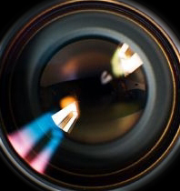Quelques éléments de
comparaison.
Parlons d'abord du temps. Entre l'arrivée d'un photon au niveau d'un cône et
celle de l'information visuelle correspondante au cerveau, deux longs centièmes
de seconde s'écoulent. Ce n'est pas rien et c'est une donnée de première
importance. Cette durée correspond en effet, ce n'est pas un hasard, à
l'intervalle entre deux affichage d'images sur un écran d'ordinateur (50 images
complètes par seconde). En deçà de cette cadence une fatigue de la vue peut
survenir. Les images entrelacées d'une télévision, affichées en deux fois sur un
cycle d'1/25ème de seconde sollicitent un travail supplémentaire de notre
système de cognition visuelle.
Toutes ces données sont cependant purement statistiques, pour ne pas dire « juste indicatives ». Concrètement on sait que le million d'axones partant de la
rétine transmet en direction du cerveau, via des corps intermédiaires, quelques
dizaines d'impulsions par seconde et que le reste du traitement suit assez sensiblement dans
ces intervalles de temps. Il s'agit donc bien d'une cadence approximative
pouvant être employée comme référence.
Parlons maintenant d'espace. Un écran d'ordinateur en configuration 1024x768
affiche 786 432 pixels et l'on peut compter tout juste le double sur une machine
bien équipée. En 2008, une caméra numérique produit une image de
quelques millions de pixels, moins de cinq en standard. Qu'en est-ils de nos capteurs naturels ? On peut dire qu'ils sont
organisés très différemment et pris dans un processus beaucoup plus compliqué et
en bonne partie d'une tout autre nature,
mais il n'est pas inutile de donner deux chiffres : 100 millions de bâtonnets, 5
millions de cônes (par oeil). Mais pour être bien rigoureux, faut-il compter les
cônes ou leurs opsines, un million de fois plus nombreuses ?
Connaissance de l'oeil
En ce qui concerne la rétine, notre savoir est très récent. C'est seulement dans les
années 1960 que l'on est en mesure d'étudier de près nos capteurs biologiques.
On analyse les réponses des récepteurs de la couleur en 1964, sur la rétine du
singe et de l'homme et, surprise, on découvre que « (.) les fonctions de
réponse des trois sortes de cônes (.) sont loin de reconstruire
harmonieusement le spectre visible. » (Libero Zuppiroli).
De premières études dans les années 1950 avaient permis de découvrir
l'importance du travail neuronal dans le travail de séparation des couleurs par
groupes de cônes rétiniens (voir ci-dessous).
Focus sur les récepteurs rétiniens
Les bâtonnets
Leur vocation est de capter la valeur, la luminosité.
Beaucoup d'animaux ont un nombre très élevé de bâtonnets mais disposent de peu
ou pas de cônes. Ils sont nyctalopes, c'est-à-dire qu'ils voient bien dans
la pénombre, non dans l'obscurité (autant le redire car la confusion à ce sujet est persistante). Ce n'est pas
forcément juste à cause du nombre
de bâtonnets qu'ils possèdent. Certains disposent de mécanismes
biologiques particuliers tels que le tapetum lucidum, voir ci-dessus.
L'être humain comme les autres animaux ne capte pas, de toute façon, la
couleur dans la pénombre. Un handicap retourné en avantage par certains
artistes qui le mettent à profit pour porter un autre regard sur leurs oeuvres,
sans les couleurs. C'est paradoxalement de la pénombre que naît la lumière.
Qui n'a pas observé la teinte bleu-vert-gris d'un paysage éclairé par la lune ?
Quand les bâtonnets prennent le relais des cônes pour nous fournir une
interprétation de ce qui est devant nous dans la pénombre, la couleur générale
nous semble d'une dominante grisâtre plutôt froide. La raison en est que
les bâtonnets sont pratiquement insensibles à la couleur
rouge. On peut ainsi lire un document éclairé en rouge et aviser sans
transition les
étoiles sans perte d'acuité visuelle alors que la même expérience avec une autre
couleur nécessiterait une dizaine de minutes, lumière éteinte, pour rétablir une
vision normalement fine du firmament. Des phénomènes tout à fait sensibles et
bien connus des astronomes amateurs.
Les cônes
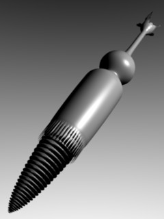Ils apportent la perception de la couleur, mais ce faisant ils participent bien
sûr également à la perception générale de l'environnement, donc aussi de la luminosité. Si je perçois de la
couleur, c'est qu'il y a de la lumière. Ils sont peu opérants dans la pénombre
mais leur apport est considérable en plein jour lorsqu'il s'agit
de distinguer des objets séparés, même inertes, grâce aux couleurs. Ce sont des agents essentiels de
ce que l'on nomme l'acuité visuelle (voir ci-dessus).
Sur l'image ci-contre - une
reconstitution sans valeur scientifique réalisée à partir de croquis de
Franziska von Kaenel -, la partie conique (dite « segment externe ») située sous
une sorte de jupe crénée (délimitant le « segment interne », au-dessus) est la
part photosensible. Les deux segments sont littéralement plantés dans le fond de
la rétine. Seuls émergent la partie sphérique (le noyau cellulaire) et ce qui la surplombe, un axone et son pédoncule. Concernant le positionnement du cône dans la
rétine, voir le schéma ci-dessous.
Le segment dit interne n'a ce nom que
parce qu'il est proche du noyau. Sa fonction est utilitaire : n'oublions pas que
cette précieuse cellule vit et respire à sa manière, comme toute autre. Le
lien, invisible ici, entre les deux segments, est ce que l'on nomme le « cil »,
une transition appartenant à un dispositif général extensible. Le « cône »
serait capable de modifier sa taille en fonction de la longueur des ondes qu'il
reçoit. La très commune technologie CCD, qui n'est qu'une application assez basique de
l'effet photoélectrique décrit par Albert Einstein, semble assez rudimentaire
par rapport à cette toute petite chose encore à peine
comprise et sans équivalent technologique connu à ce jour.
Au coeur du sujet : rétinal et opsine
Chaque cône contient environ un
million d'opsines. A proprement parler, l'opsine
est une protéine enveloppant le rétinal, qui est le
récepteur fondamental, identique quelque soit le type de cônes. Le rétinal -
entendons bien ici que nous parlons d'une
macromolécule - est extrêmement réactif à l'arrivée d'un photon. Il se
détend. Dit autrement, il change de configuration moléculaire.
C'est le début d'une réaction en
chaîne qui est « configurée » par l'opsine. Celle-ci envoie des « messagers
chimiques » à l'ensemble du cône qui réagit à son tour et transmet des
informations (caractérisées par son type, c'est-à-dire par le type de cônes)
vers ses interlocuteurs.
Longueurs d'ondes
Le spectre auquel les cônes sont sensibles se situe chez l'humain entre 400 et 800 nm
(entre 380 et 780 selon certains, des chiffres à ne pas prendre de toute façon
pour des frontières nettes sachant par exemple qu'à 360 nm de véritables
perceptions seraient constatées).
Pour chaque type de cônes, on prend ci-dessous pour référence la fréquence où la réponse
est optimale (pics de sensibilité). Mais les champs de fréquences sont à
« large bande » et se recouvrent mutuellement.
Sur ce point on citera de nouveau Libero Zuppiroli : « Pour extraire des
informations enregistrées par les photorécepteurs la vaste palette de teintes que nous
connaissons, il faut, dans la rétine, des circuits neuronaux qui augmentent le
contraste, ainsi qu'une analyse globale des espèces colorées et des contrastes
de couleurs que seul le cortex cérébral peut achever. »
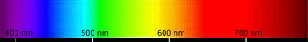
A quelles couleurs
correspondent les longueurs d'ondes ?
Les catégories de cônes
Ce sont :
* les cônes S (de short wavelength, longueurs d'ondes courtes).
Un « pic » se situant autour de 420 ou 450 nm selon les sources.
* les cônes M (medium, 530 nm) et L (long, 560 nm).
Ils sont très proches par les
spectres perçus (une séparation de 30 nm pour une demi-zone de perception de
100 nm, le cône L dessinant ainsi la frontière entre le rouge et l'invisible
infrarouge). Ils sont proches aussi par leurs chimies.
Tous deux ne se seraient distingués l'un de l'autre qu'assez
récemment - il y a 30 millions d'années sur les 80 généralement attribuées aux
primates, sources Robert W. Rodieck, Libero Zuppiroli. D'après ce dernier, les
cônes S auraient précédé cette subdivision du tronc commun M/L mais ne seraient
apparus qu'il y a 40 millions d'années. Ainsi, pendant 10 millions d'années, les
primates auraient perçu les chaudes et les froides mais mal distingué les
couleurs intermédiaires, comme beaucoup de daltoniens (voir
ci-dessus).
Pour les humains d'aujourd'hui, la population par types de cônes se répartirait
approximativement ainsi :
* S : 1,6%
* M : 32,8%
* L : 65,6%
La dissymétrie est donc tout aussi considérable sur ce plan. Toutes ces
considérations sur les recouvrements et les disproportions nous incitent à une
réflexion globale qui s'impose comme une évidence : sans le travail du système
neurobiologique situé des cônes réceptifs à notre cerveau, notre vision du monde
serait incroyablement bancale.
Des serrures
Les substances contenues dans les cônes (les « opsines » S, M et L) absorbent ou
non la lumière en fonction de son spectre à cause de leur propre configuration
isomérique. La perception de la couleur commence donc, à l'instar d'une serrure
et d'une clé, par une affaire de tailles et de formes.
Des groupes
La transmission des informations à destination du cortex visuel ne se fait pas
« cône par cône » comme on l'a cru très longtemps mais par champs récepteurs,
par groupes de cônes (sachant rappelons-le qu'un seul cône contient un million
d'opsines). Cela signifie notamment qu'une couleur peut être
« séparée » (c'est le terme généralement utilisé), en fait « élaborée » et même
synthétisée par groupes. La
synthèse de couleurs (voir
l'avertissement préliminaire) pourrait
bien commencer à un niveau primaire, celui des
cellules ganglionnaires (voir Connaissance de l'oeil). Information non confirmée.
Un véritable fatras biologique
très bien
organisé : la rétine, mangrove de l'oeil
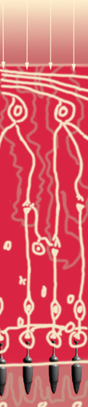Contre toute logique apparente, la rétine est composée de couches cellulaires
dont les agents récepteurs sont situés, par rapport à la lumière
incidente, tout en arrière (c'est peu ou prou la couche du fond, qui contient
les cônes et les bâtonnets fixés dans un corps de cellules jointives
[3]) alors que les
axones transmetteurs (le nerf optique) sont tout à fait en avant. Entre les deux se situe
une consistante ménagerie biologique dont les fameuses
cellules
ganglionnaires, multiples points de départ du
nerf optique, mais aussi toutes sortes de
connexions variées traitant différents niveaux du signal transmis par les
photorécepteurs ainsi que des corps « utilitaires » assurant le fonctionnement de
l'ensemble.
Les cellules ganglionnaires
effectuent un important travail de mise en contraste des informations en
provenance des cônes. Si comme on l'a dit ceux-ci sont très peu éloignés quant
aux spectres perçus, entre le type M et le type L, une telle cellule serait capable de
multiplier cet écart par un facteur 4 ou 5. Un puissant labeur est ainsi effectué juste
au-dessus de la source d'informations. D'autres interprétations seraient
réalisées encore en deçà, dans les couches intermédiaires.
Les transmissions sont
électrochimiques, c'est-à-dire plus précisément que le récepteur situé dans les
cônes et les bâtonnets fournit une information électrique (n'oublions pas que la
lumière a une action sur les électrons) alors que les
transmetteurs (synapse et pédoncules synaptiques) fournissent une information
chimique, à savoir une molécule, un « neurotransmetteur », ici un glutamate, ce
qui est assez commun dans l'univers neural.
Cette molécule provoque à son tour
l'émission d'impulsions électriques que l'on sait mesurer. Leur fréquence est
peut-être
porteuse d'informations. Une cellule ganglionnaire de la
fovéa émet trente impulsions par seconde lorsqu'une lumière
rouge parvient aux récepteurs.
La lumière traverse en un espace de 250 µm un peu
moins d'une dizaine de couches cellulaires imbriquées. Les récepteurs (ici en
bas), cônes et bâtonnets, transmettent leurs signaux
électrochimiques via des connexions dites « cellules horizontales », puis via les longues
cellules intermédiaires chargées de premiers traitements. Ces impulsions
parviennent à une autre couche intermédiaire où sont présentes les synapses
postérieures des cellules ganglionnaires. De ces cellules partent d'autres
synapses, antérieures, qui constituent le nerf optique, acheminant les informations aux corps
intermédiaires (pulvinars,
corps genouillés) via le disque optique et
le chiasma.
Cela donne l'impression d'un espace serré, dense, mais
les 250 microns d'épaisseur de la rétine représentent quand même 312 fois la longueur d'onde
du rouge et 825 fois celle du bleu environ. Néanmoins, c'est bien une sorte de
petite mangrove cellulaire qui surplombe les
photorécepteurs.
Le schéma ci-dessus est
particulièrement sommaire et ne se veut pas fidèle ni même explicatif. Il
prétend seulement donner une image en coupe figurant un peu les « étages
imbriqués » de la rétine.
Conclusion
Ce qui semble le plus frappant dans cette exploration de l'appareil visuel, ce
sont les incertitudes, la nouveauté de la recherche et même le retard avec
lequel nous-mêmes avons choisi de traiter le sujet sur ce site internet. Comme si
ledit
sujet demeurait d'une manière ou d'une autre l'objet de profondes résistances.
_____
1 Les fréquences visuelles sont perçues approximativement entre 400 et 800 nm. Cette différence du simple au double correspond à un écart d'une octave en
musique, une et une seule. L'oreille en perçoit environ une dizaine, autour du
la du diapason.
Celui-ci est généralement défini à 442 Hz de nos jours, ce qui correspond à une
longueur d'onde de 68 cm (pour un son se propageant à 300 m/s). Cette longueur
est plus d'un
million de fois plus grande que celle d'une lumière de couleur moyenne.
Cette considérable différence d'échelles n'est peut-être pas sans
rapport avec celle qui marque notre manière de capter les
phénomènes visuels et auditifs. La cochlée a un diamètre d'un ou deux
millimètres alors que les composants de la rétine sont des objets micrométriques ou
nanométriques.
Si nous étions sensibles à davantage de fréquences de la lumière,
percevrions-nous la redondance, la répétition à l'octave qui nous est si
familière, si évidente en musique ? Ce n'est pas à exclure a priori. Alors quels
seraient nos concepts, nos mots pour parler de la couleur ? Placerions-nous un
rouge bémol sous la troisième ligne d'une portée en clé de jaune ? Sans doute
serions-nous amenés à ce genre de classifications, aussi fantaisistes qu'elles
puissent paraître.
C'est une vue de l'esprit mais on se rend vite compte des implications : si nous
percevions dix fois plus de couleurs (comme nous percevons une dizaine
d'octaves), entre deux seules « notes de couleur »
(demi-tons transposés à la lumière), nous aurions 1202 (soit 14 400)
combinaisons possibles et non juste 122 (soit 144). Cent fois plus
d'accords binaires de couleurs.
Il est impossible - c'est un constat - de percevoir dans l'univers des couleurs
l'équivalent de la complexité harmonique que l'on trouve en musique. La palette
d'un peintre est pour ainsi dire misérable par rapport aux registres dont
dispose un musicien. Mais une seule octave permet de réaliser une mélodie
infiniment transposable.
Par ailleurs, c'est important de le souligner, entre deux « demi-tons
chromatiques », nous percevons sans doute beaucoup plus que cinq écarts alors qu'en
musique, cinq « commas » tout au plus peuvent être distingués par l'oreille
humaine dans un demi-ton. Propos à relativiser : nous percevons beaucoup
plus de nuances entre les différents verts qu'entre d'autres couleurs. Nos
capacités de perception chromatique ne sont pas réparties uniformément. Un peu
comme si nous percevions les variations du mi mieux que celles du la.
Pour retourner au corps du texte,
cliquez sur le bouton "Précédent" de votre navigateur
2 Il arrive que la perception du déplacement perde toute fluidité. C'est
l'akinétopsie ou cécité du mouvement. Une voiture qui se rapproche semble passer
sans transition du lointain au proche, comme en deux « instantanés » juxtaposés.
Cette maladie (très handicapante) peut être déclenchée par un accident vasculaire
cérébral. Elle correspond à des lésions de « l'aire V5 ou MT », une partie du
cerveau qui serait précisément spécialisée dans le traitement du mouvement. A
noter que c'est encore une anomalie qui a permis de faire avancer nos
connaissances.
3 nommé « épithélium pigmentaire » bien qu'il ne contienne pas de pigments au
sens strict du terme.
Pour retourner au corps du texte,
cliquez sur le bouton "Précédent" de votre navigateur
Retour
début de page